Caso Clínico: Roberto Sánchez Martínez, 52 años · LB Miguel Ángel Alcaraz Haros
Recibe materia prima (grasa de la dieta y del tejido adiposo), la procesa de tres formas: la quema para obtener energía, la convierte en productos útiles, o la empaqueta y envía a otros órganos. El problema ocurre cuando llega más grasa de la que puede procesar — y empieza a acumularse adentro.
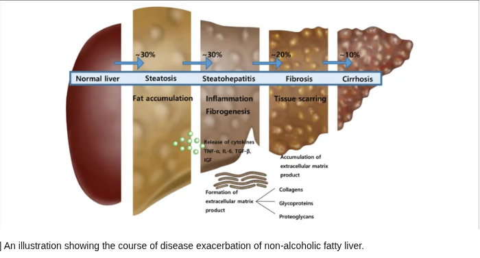
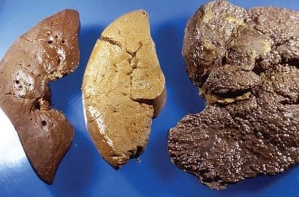
La esteatosis hepática es la acumulación de grasa (triglicéridos) dentro de los hepatocitos — las células del hígado — cuando la cantidad que entra supera la que el hígado puede quemar o exportar. Criterio histológico: más del 5% de hepatocitos con vacuolas lipídicas.
Etimología: stéar (griego) = grasa + osis = condición. No es una enfermedad única, es un hallazgo — como decir "hay fiebre". La fiebre puede tener mil causas; la esteatosis también.
¿Cómo procesa el hígado la grasa normalmente? — La historia completa
Tres fuentes principales: la grasa que comemos (viaja en quilomicrones desde el intestino), la grasa del tejido adiposo (cuando el cuerpo necesita energía) y la que el propio hígado fabrica a partir del azúcar que comemos (lipogénesis de novo).
La grasa entra a la mitocondria y se rompe para obtener energía (ATP). Es lo que queremos. Funciona bien cuando hacemos ejercicio o ayunamos.
El hígado empaqueta la grasa en partículas VLDL. Para esto necesita dos proteínas clave: ApoB100 (el "sello" de identificación del paquete) y MTTP (proteína microsomal transferidora de triglicéridos — la que carga la grasa dentro del paquete). Sin MTTP funcional, la ApoB100 se degrada y los triglicéridos quedan atrapados. Mutaciones en MTTP causan abetalipoproteinemia — esteatosis hepática severa desde la infancia.
Si llega demasiada grasa y el hígado no puede quemarla ni exportarla, la guarda en gotas lipídicas dentro del hepatocito. Esto es la esteatosis. El hígado se convierte en un cubo lleno de grasa.
1. El hígado recibe grasa de tres fuentes → la quema (β-oxidación), la exporta (VLDL), o la acumula.
2. La VLDL necesita ApoB100 (sello) y MTTP (cargador) — sin ambos no hay exportación.
3. Esteatosis = más grasa entrando de la que puede salir. Es un desbalance, no una "enfermedad" per se.
4. El hígado es silencioso: acumula grasa años sin dar síntomas.
La esteatosis simple es el agua estancada: fea, incómoda, pero no destruye la casa. La esteatohepatitis (NASH) es cuando el agua lleva tantos días ahí que ya hay moho, la madera se pudre y las paredes se dañan. Misma causa inicial, consecuencias completamente distintas.
El Espectro Completo — De lo benigno a lo mortal
Solo grasa acumulada.
Sin inflamación.
Hígado "empachado" pero no dañado.
Reversible con cambios de vida.
Grasa + inflamación + daño activo.
Las células del hígado mueren.
Empieza la cicatrización.
Puede progresar a cirrosis.
Cicatrices permanentes.
El hígado ya no puede repararse.
Solo trasplante puede salvar.
Punto de no retorno.
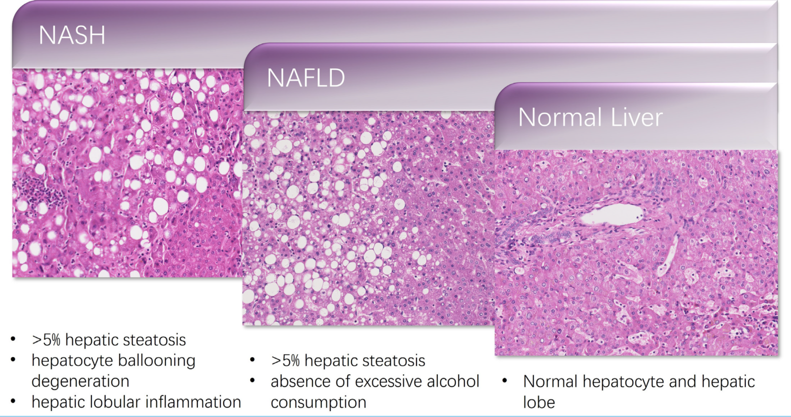
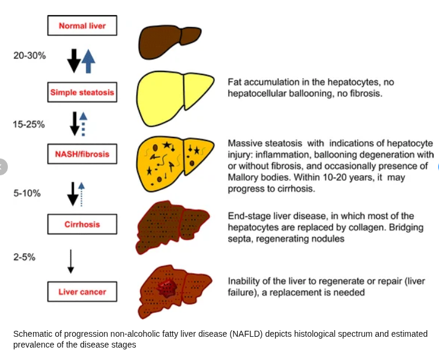
La fibrosis F2 (moderada) aún puede revertir significativamente con intervención activa. Pero la fibrosis en puente (F3) y la cirrosis (F4) marcan el umbral de no retorno funcional. En F3, el riesgo de descompensación hepática a 5 años es ~20%. En F4, asciende a ~50%. Incluso en F4, la pérdida de peso significativa puede mejorar lentamente — pero es un camino mucho más largo y difícil. La clave es interceptar antes de F3.
¿Qué diferencia exactamente a la esteatosis de NASH?
1️⃣ Esteatosis — la grasa sigue ahí, sigue siendo el punto de partida
2️⃣ Balonamiento hepatocelular — el hepatocito se infla, se deforma, va camino a morir
3️⃣ Inflamación lobulillar — células del sistema inmune (neutrófilos) dentro del tejido hepático
Sin los tres, no es NASH. Con los tres, el reloj empieza a correr hacia la cirrosis.
El NAS puntúa esteatosis (0-3) + balonamiento (0-2) + inflamación lobulillar (0-3). Máximo: 8 puntos.
| NAS | Realidad histológica | Interpretación |
|---|---|---|
| ≥ 5 | 86% tienen NASH definitivo | 14% son falsos positivos |
| ≤ 4 | 29% tienen NASH | Falsos negativos importantes |
Una sola vacuola grande que desplaza el núcleo a la periferia — el hepatocito parece un adipocito. Es el patrón clásico de NAFLD, alcohol y fármacos. Pronóstico crónico, progresión lenta.
Múltiples vacuolas pequeñas que no desplazan el núcleo central. Citoplasma espumoso. Se asocia a defectos de β-oxidación: hígado graso agudo del embarazo, síndrome de Reye, toxicidad por valproato. Peor pronóstico agudo — puede evolucionar a falla hepática fulminante.
1. Esteatosis simple = grasa sin daño. NASH = grasa + inflamación + muerte celular.
2. La diferencia la hace la inflamación y la fibrosis, no la cantidad de grasa.
3. El punto de no retorno es la fibrosis avanzada F3-F4 — interceptar antes es la prioridad.
4. El NAS es herramienta de seguimiento, no de diagnóstico en consultorio.
5. Microvesicular = núcleo central = causa aguda = peor pronóstico inmediato.
Como diferentes ríos que desembocan en el mismo mar. La obesidad, el alcohol, ciertos medicamentos, el embarazo — todos llegan al mismo resultado: más grasa entrando al hígado de la que puede manejar.
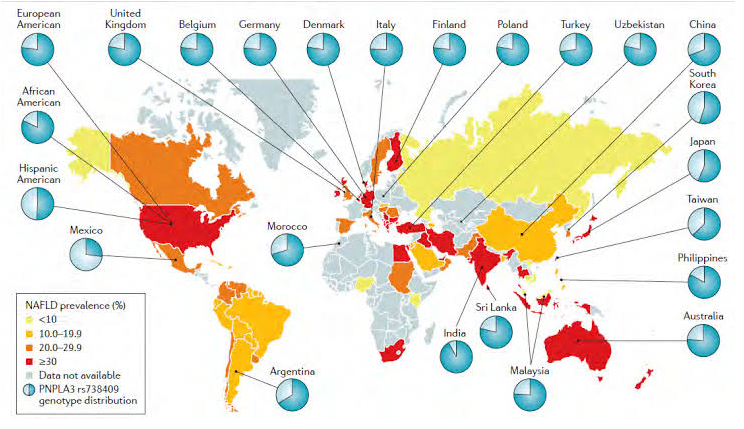
Las Causas Principales
América Latina tiene la mayor prevalencia de NAFLD del mundo (30-35%). La combinación de dieta alta en harinas refinadas y azúcares (refrescos, tortillas en exceso), sedentarismo y predisposición genética de la población mestiza al síndrome metabólico crea el terreno perfecto. El NASH ya es la causa de trasplante hepático que más crece en México.
NAFLD vs AFLD — La pregunta del millón: ¿es por alcohol o no?
El Síndrome Metabólico — El motor del NAFLD
La grasa visceral es la más peligrosa — envía señales inflamatorias directo al hígado.
Más grasa circulante = más llega al hígado.
Insulinorresistencia: el azúcar no entra a las células y activa fabricación de grasa hepática.
Componente inflamatorio sistémico que daña órgano.
"Colesterol bueno" bajo = dislipidemia aterogénica.
El primer golpe llena el hígado de grasa y lo deja vulnerable. El segundo golpe añade inflamación y estrés — y convierte la esteatosis en NASH. Hoy sabemos que en realidad son múltiples golpes simultáneos, pero la imagen de dos golpes sigue siendo la más útil para entenderlo.
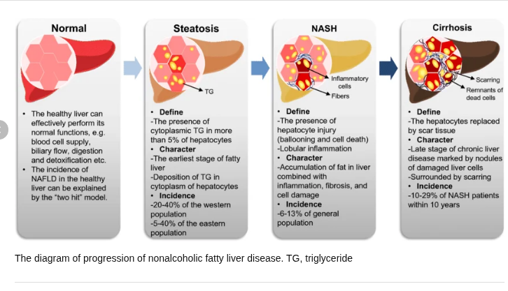
Primer Golpe — ¿Cómo se llena de grasa el hígado?
En el tejido adiposo, la insulina inhibe la enzima que rompe los triglicéridos (lipasa hormono-sensible). Cuando hay resistencia a insulina, esa llave se pierde — los triglicéridos se rompen sin control y liberan ácidos grasos libres al plasma.
El hígado recibe mucho más de lo que puede procesar. Lo que no puede quemar ni exportar (sistema MTTP-ApoB100 saturado), lo guarda. Las vacuolas grasas empiezan a aparecer.
El exceso de azúcar en sangre activa SREBP-1c y ChREBP — factores de transcripción que ordenan al hígado convertir glucosa en grasa. Doble problema: llega grasa desde fuera Y el hígado fabrica más.
No puede quemar suficiente (mitocondria sobrecargada), no puede exportar suficiente (VLDL limitada) y sigue recibiendo más. El hígado queda lleno de grasa y vulnerable al segundo golpe.
El polimorfismo PNPLA3 rs738409 aumenta 1.7 veces el riesgo de NAFLD en población mexicana (Chinchilla-López et al., 2018). La población indígena mexicana tiene la frecuencia más alta reportada del alelo de riesgo 148M. Esto explica por qué algunos pacientes desarrollan NASH con menor carga metabólica que otras poblaciones. El genotipo M148M predispone a esteatosis más severa y progresión acelerada a fibrosis — independientemente del peso corporal. Roberto (mexicano, síndrome metabólico) tiene alta probabilidad de portar este polimorfismo.
Segundo Golpe — ¿Cómo se convierte en NASH?
La grasa acumulada se oxida → produce radicales libres (ROS) → daña membranas, mitocondrias, ADN → las células mueren.
Como dejar grasa en la sartén sin limpiar — se pone rancia y corroe el metal.
Las grasas saturadas (ácido palmítico del tocino y manteca) activan señales de muerte celular vía JNK y NF-κB directamente.
La misma cantidad de grasa de aguacate es menos tóxica que manteca.
Los hepatocitos que mueren envían señales → células de Kupffer se activan → TNF-α, IL-6 → neutrófilos invaden = NASH.
La disbiosis intestinal amplifica esto: LPS bacteriano activa TLR4 hepático, y el sobrecrecimiento bacteriano (56% en NAFLD vs 21% controles) genera etanol endógeno que contribuye al daño.
La inflamación crónica activa a las células estelares → producen colágena → fibrosis → el tejido funcional es reemplazado por cicatriz → cirrosis.
No tiene receptores de dolor en su interior. Solo avisa cuando se estira su cápsula exterior o cuando ya está tan dañado que fallan sus funciones. Por eso el hígado graso puede destruirse en silencio durante años antes de dar síntomas.
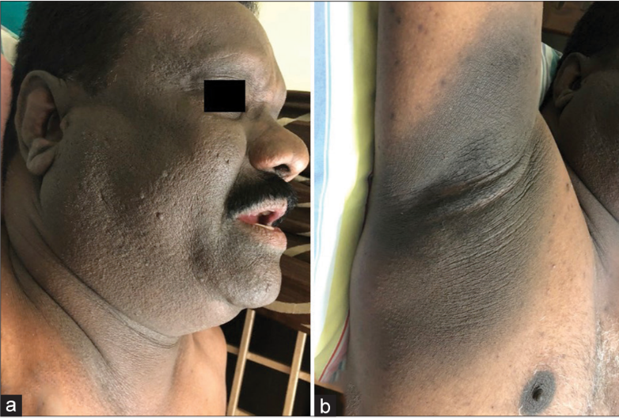
Síntomas — Clic para ver el mecanismo detrás
¿Cómo leer los laboratorios hepáticos? — Lo esencial
No se memorizan valores. Se entiende qué cuenta cada enzima. ALT cuenta hepatocitos dañados. FA cuenta colestasis (tapón biliar). Si ALT alta + FA normal = el problema es la célula, no la tubería.
El truco diagnóstico:
🟢 ALT > AST = NAFLD (metabólico)
🔴 AST > ALT = alcohol (depleciona vitamina B6 que hace falta para sintetizar ALT)
Ratio AST/ALT <1 = patrón NAFLD · Ratio >1.5 = patrón alcohólico
En el hígado graso estas enzimas son normales. El hígado graso daña al hepatocito, no bloquea la vía biliar.
Si FA y bili son normales = patrón hepatocelular puro = NAFLD
Si FA y bili suben = pensar en obstrucción biliar
1. El hígado graso es silencioso — 70-80% no da síntomas hasta que hay daño avanzado.
2. La acanthosis nigricans en cuello/axilas = señal cutánea de insulinorresistencia → pensar en hígado graso.
3. En laboratorio: ALT > AST + FA y bili normales = patrón hepatocelular = huella de NAFLD.
4. Ratio AST/ALT <1 orienta a NAFLD · >1.5 orienta a alcohol.
Las células muertas se reemplazan con tejido cicatrizal (fibrosis). Al principio el edificio sigue en pie. Pero si suficiente tejido funcional es reemplazado por cicatriz, el edificio deja de funcionar — eso es la cirrosis.
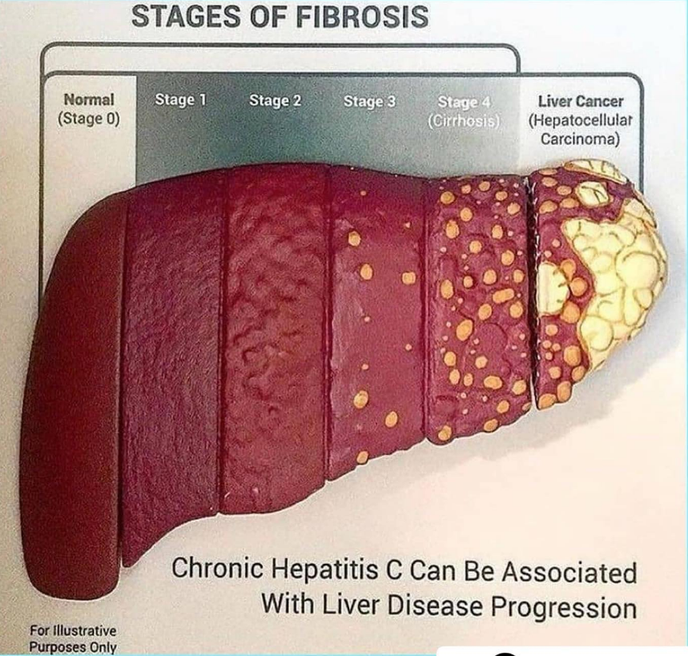
El Camino hacia la Cirrosis — Etapas
¿Qué le pasa exactamente al cuerpo cuando hay cirrosis?
La cicatriz dificulta el flujo de sangre que viene del intestino. La presión sube en la vena porta. El líquido escapa al peritoneo (ascitis). Las venas del esófago se dilatan (várices) — si se rompen, hemorragia fatal.
El hígado ya no puede limpiar el amoniaco. El amoniaco llega al cerebro: confusión, somnolencia, coma. Es una urgencia médica.
Complicación de cirrosis F4 con ascitis. La vasodilatación esplácnica genera hipoperfusión renal → falla renal funcional. Prevalencia: hasta 10% de pacientes con cirrosis y ascitis. Mortalidad: 50% a 2 semanas sin tratamiento. Se redefine en 2024 como HRS-AKI.
El NASH puede desarrollar cáncer incluso sin cirrosis — a diferencia de otras causas. Riesgo anual en cirrosis por NASH: 2-4%. El estrés oxidativo crónico acumula mutaciones.
La respuesta sorprende: la causa #1 de muerte en NAFLD no es el hígado — es el corazón. El mismo síndrome metabólico que daña el hígado también daña las arterias coronarias. Un paciente con NAFLD tiene 2-3 veces más riesgo de infarto. Por eso el tratamiento del colesterol y la presión es tan importante como el del hígado mismo.
| Causa de muerte en NAFLD | Porcentaje | Implicación clínica |
|---|---|---|
| ❤️ Cardiovascular (infarto, ACV) | 45% | Tratar colesterol y presión es tan urgente como tratar el hígado |
| 🔵 Extrahepática no CV (cáncer, infecciones) | 25% | Vigilancia oncológica y manejo de comorbilidades |
| 🟡 Hepática (cirrosis / CHC) | 15% | Solo 15% muere por el hígado — pero es la más prevenible |
| ⚪ Otras causas | 15% | — |
Las escalas de medición en medicina no son verdades absolutas — son herramientas que evolucionan con la evidencia. METAVIR fue el estándar durante décadas para estadificar fibrosis. Hoy, para hígado graso, el sistema NASH CRN es más preciso porque fue diseñado específicamente para esta enfermedad. Mañana habrá otro sistema más refinado. Lo que no cambia es el principio fundamental: la fibrosis mata, independientemente de cómo la midas.
Las guías de la AASLD, EASL y las sociedades latinoamericanas se actualizan cada 2-3 años. Lo que aprendiste hoy puede estar refinado mañana. Desarrolla el hábito de revisar guías vigentes antes de tomar decisiones clínicas — no basta con lo que memorizaste en la carrera.
No todos los hospitales tienen FibroScan, RM o acceso a Resmetirom. Un médico en una comunidad de Sinaloa necesita saber diagnosticar y estadificar fibrosis con lo que tiene — clínica, laboratorio básico y ultrasonido. La medicina de precisión es el ideal; la medicina accesible es la realidad de millones de mexicanos. Ser buen médico también es saber hacer mucho con poco.
1. El 70% de pacientes con hígado graso NUNCA llega a complicaciones — si cambia su estilo de vida.
2. La fibrosis F3-F4 es el punto de inflexión: en F3 ya hay 20% de riesgo de descompensación a 5 años.
3. El HRS-AKI (síndrome hepatorrenal) es una complicación de cirrosis F4 con 50% de mortalidad a 2 semanas.
4. La causa de muerte #1 en NAFLD es cardiovascular, no hepática.
Roberto Sánchez tiene 52 años, es contador en una empresa de Culiacán. Trabaja sentado 10 horas al día, come en la calle casi siempre — tortas, refrescos, "lo que haya". Su empresa le ofrece chequeo médico anual y este año algo salió diferente. La enfermera lo llama aparte: "Le salieron unos estudios alterados, necesita pasar con el médico."
Roberto no siente nada raro. No le duele nada. Está "cansado pero normal". Tiene 3 años con diagnóstico de diabetes que toma irregular, 4 años con presión alta que casi no controla, y dice tomar "una o dos copas los fines de semana, nada más".
Ficha del paciente
Exploración física
🔑 Acanthosis nigricans — cuello y axilas (piel oscura y engrosada)
🔑 Hepatomegalia 3 cm — palpable, borde liso, no dolorosa
✅ Sin ictericia · Sin ascitis · Sin circulación colateral
Monitor — Resultados del chequeo
ESTUDIOS DE LABORATORIO
↑ Hígado aumentado de tamaño, bordes redondeados
↑ Parénquima hiperecogénico — "hígado brillante"
↑ Atenuación posterior del haz ultrasónico
✓ Sin lesiones focales · Vía biliar libre
¿Por qué Roberto tiene los triglicéridos tan altos si "come normal"? · ¿Qué hizo mal la insulina? · ¿De dónde viene el ALT elevado? · ¿Por qué el hígado se ve brillante en el ultrasonido? · ¿Qué tiene que ver la acanthosis nigricans con el hígado? · ¿Podría el PNPLA3 estar acelerando su enfermedad?
Esteatohepatitis no alcohólica (NASH) asociada a síndrome metabólico.
Patrón hepatocelular (ALT > AST, ratio 0.63) + síndrome metabólico 5/5 criterios + USG compatible + exclusión de alcohol, hepatitis viral y autoinmune.
🔴 Obesidad abdominal (IMC 33.1 · cintura 108 cm)
🔴 Triglicéridos ≥150 → 280 mg/dL
🔴 HDL bajo → 38 mg/dL
🔴 Glucosa en ayuno ≥100 → 126 mg/dL
🔴 HTA → 138/88 mmHg
Las vacuolas lipídicas dentro de los hepatocitos tienen diferente impedancia acústica que el tejido sano. El haz de ultrasonido rebota más en la interfase grasa-agua → el parénquima aparece hiperecogénico (más blanco/brillante que el riñón derecho). La atenuación posterior ocurre porque la grasa absorbe el haz profundo. Es el mismo principio que ver agua vs aceite en un vaso.
Insulinorresistencia → hígado produce más VLDL de lo que puede exportar → partículas ricas en TG circulan como remanentes.
⚠️ Más aterogénicos que LDL — penetran la íntima arterial sin modificarse. Roberto tiene TG de 280: sus remanentes están atacando su corazón.
Para exportar grasa el hígado ensambla VLDL con ApoB-100 y MTTP. Si el sistema está saturado o hay estrés de retículo que reduce MTTP, los TG no salen.
→ La salida no compensa el influjo → esteatosis por retención.
Con hiperinsulinismo, la señal PPAR-α baja y el malonil-CoA bloquea CPT-1 — el AGL no puede ni entrar a la mitocondria.
→ Grasa que no se quema → se acumula → si se desborda → ROS → NASH.
En el adipocito sano, la insulina inhibe la lipasa hormono-sensible (HSL). Con insulina presente, la grasa se queda guardada. Se libera solo cuando el cuerpo la necesita.
La insulina sigue siendo alta (hiperinsulinismo compensador), pero el adipocito dejó de responder. HSL sin freno → lipólisis descontrolada → AGL al torrente sanguíneo, todo el día.
CD36/FATP captan los AGL. Intenta quemarlos (β-oxidación → se satura) y exportarlos en VLDL vía MTTP-ApoB100 (→ también se desborda). Solución de emergencia: esterificarlos en TG y guardarlos como vacuolas.
La hiperglucemia activa SREBP-1c y ChREBP → lipogénesis de novo (DNL). Roberto tiene HbA1c de 7.8% → lleva meses fabricando grasa adicional.
La β-oxidación desbordada genera ROS. Los ROS peroxidan los lípidos de membrana. Muerte celular → DAMPs → células de Kupffer → TNF-α, IL-6 → inflamación → células estelares → colágena → fibrosis.
🏠 Dónde vive: citosol del hepatocito — casi exclusivamente
⚙️ Qué hace: transamina alanina ↔ piruvato (gluconeogénesis)
⏱️ Vida media: ~47 horas
🎯 Alarma específica del hígado.
🏠 Dónde vive: citosol (20%) y mitocondria (80%)
⚠️ También en: músculo, corazón, riñón — menos específica
⏱️ Vida media: ~17 horas
🎯 Si sube la AST mitocondrial = daño más profundo.
El hígado no tiene el monopolio. Un crossfitero con piernas destruidas puede tener las enzimas más altas que un cirrótico compensado.
Rabdomiólisis por ejercicio excéntrico.
AST 120 U/L · ALT 60 U/L
Clave: CK > 4500. En 5 días solas normalizan sin tocar el hígado.
AST 55 U/L · ALT 48 U/L
TSH 45 (hipotiroidismo severo). Al tratar la tiroides, las enzimas normalizan sin tocar el hígado.
AST 95 U/L · LDH 400
Error preanalítico — glóbulos rojos rotos en el tubo. No enfermedad.
Hormona incretina del intestino delgado (células L) al comer.
🟢 Le dice al páncreas: suelta insulina (glucosa-dependiente)
🟢 Frena el glucagón · Enlentece vaciamiento gástrico
🟢 Le dice al cerebro: para de comer
Problema: dura solo 2 minutos antes de degradarse (DPP-4).
Copia modificada del GLP-1 que dura 7 días.
🔵 ↓ apetito → menos calorías → menos sustrato para grasa
🔵 ↑ sensibilidad insulínica → ↓ lipólisis → menos AGL al hígado
🔵 Reduce esteatosis 30-40% (MRI-PDFF)
🔵 Mejora balonamiento e inflamación en NASH
El segundo golpe del NASH es el estrés oxidativo. La vitamina E (α-tocoferol) es antioxidante liposoluble: vive en las membranas y neutraliza los ROS antes de que oxiden los ácidos grasos.
Estudio PIVENS: 800 UI/día en NASH sin diabetes → ✅ mejora esteatosis, inflamación y balonamiento · ❌ No mejora la fibrosis.
⚠️ Posible ↑ mortalidad con dosis altas (>400 UI/día).
⚠️ No recomendada en diabéticos (TONIC: sin beneficio claro).
⚠️ No en cirrosis ni enfermedad cardiovascular.
¿Roberto la recibe? No — tiene DM2. Para él: semaglutida o pioglitazona.
"Natural" no siempre es inocuo ni universal.
Marzo 2024 — cambia el paradigma: ya existe tratamiento farmacológico específico para el hígado graso avanzado. Antes solo había intervención sobre la causa (obesidad, diabetes). Ahora hay un medicamento que actúa directamente sobre el hepatocito.
Agonista selectivo del receptor tiroideo β (THR-β) hepático.
La hormona tiroidea T3 activa THR-β en el hígado → ↑ β-oxidación de AGL → ↓ lipogénesis de novo → ↓ esteatosis.
La selectividad hepática evita efectos cardíacos y óseos de la hormona tiroidea sistémica.
✅ Resolución de NASH sin empeorar fibrosis: 26-36% (vs 9-13% placebo)
✅ Mejoría de fibrosis ≥1 etapa: 23-28% (vs 13-15% placebo)
📋 Dosis: 80 mg (<100 kg) · 100 mg (≥100 kg) · vía oral/día
⚠️ EA: diarrea, náuseas (20-30%)
❌ Contraindicado en cirrosis descompensada
Aún no — el fármaco está aprobado para F2-F3 (fibrosis moderada-avanzada). Roberto tiene fibrosis probable F0-F1 (USG sin datos de fibrosis, sin FibroScan aún). Pero debe saber que existe — si su enfermedad progresa a F2-F3 sin respuesta a pérdida de peso y semaglutida, Resmetirom es el siguiente escalón. Esto refuerza la importancia de estadificar con FibroScan.
El FIB-4 y el NAFLD Fibrosis Score se calculan con datos que cualquier hospital tiene: edad, AST, ALT y plaquetas. Son la herramienta del médico en contextos de recursos limitados.
| Resultado | Interpretación |
|---|---|
| < 1.45 | Bajo riesgo — excluye F3-F4 (VPN 93%) |
| 1.45 – 3.25 | Zona gris — considerar FibroScan |
| > 3.25 | Alto riesgo — fibrosis avanzada probable |
AUC 0.85 para detectar fibrosis F3-F4. Roberto: calcular con sus labs antes de pedir FibroScan.
| Resultado | Interpretación |
|---|---|
| < -1.455 | Excluye fibrosis avanzada F3-F4 |
| -1.455 a 0.676 | Zona indeterminada |
| > 0.676 | Predice fibrosis avanzada F3-F4 |
VPN 93% para fibrosis avanzada. Más complejo que FIB-4 pero más preciso en ciertos contextos.
¿Grasa? → USG · ¿Fibrosis? → FibroScan · ¿Masa o grasa exacta? → RM · ¿Cáncer en cirrosis? → RM o TAC trifásica. No se piden todos a la vez.
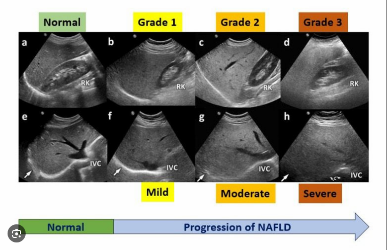
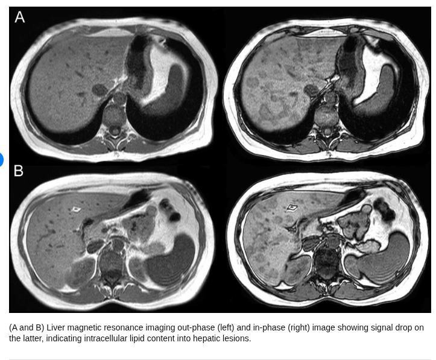
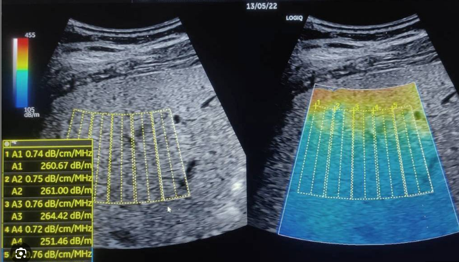
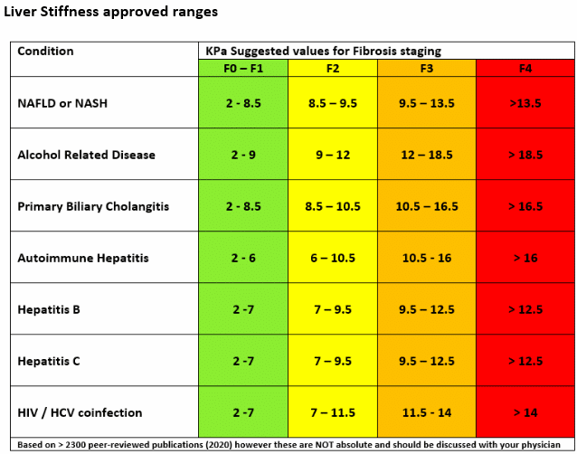
Perder 7-10 kg reduce esteatosis, inflamación y hasta fibrosis. Es el único tratamiento aprobado para esteatosis simple. Dieta mediterránea + restricción de carbohidratos + ejercicio 150 min/semana. Sin esto, ningún fármaco funciona bien.
Metformina mejora insulinorresistencia. Semaglutida — candidato ideal: pierde peso + mejora el hígado + protege el corazón. Triple beneficio con un fármaco. Si falla o es intolerante: Pioglitazona (mejora esteatosis e inflamación, pero aumenta peso).
Atorvastatina — las estatinas son seguras en hígado graso (mito que lo dañan). La causa #1 de muerte en NAFLD es el infarto. TG altos de Roberto también justifican agregar fibratos o ácidos grasos omega-3.
Roberto necesita un FibroScan para saber en qué estadio F está. Si es F2-F3 y no responde a pérdida de peso + semaglutida en 6-12 meses: Resmetirom (Rezdiffra) es el siguiente escalón farmacológico aprobado.
Transaminasas c/6 meses · FibroScan en 6-12 meses · Si mejora con pérdida de peso: imagen c/2-3 años. ☕ Bonus: 2-3 tazas de café/día se asocian a menor riesgo de fibrosis hepática (polifenoles antifibróticos independientes de cafeína).
1️⃣ ALT/AST ≠ hígado enfermo. Todo lo que tiene mitocondrias puede liberar transaminasas. El laboratorio es una pista, no la sentencia.
2️⃣ MTTP + ApoB100 son el sistema de exportación — sin ambos, los TG quedan atrapados.
3️⃣ PNPLA3 explica por qué los mexicanos desarrollan NASH con menor carga metabólica que otras poblaciones.
4️⃣ El punto de no retorno es F3-F4 — interceptar antes es la prioridad absoluta.
5️⃣ Resmetirom (FDA 2024) es el primer fármaco específico para NASH — cambia el paradigma del tratamiento.
6️⃣ La imagen se elige según la pregunta: USG → grasa · FibroScan → fibrosis · RM → masas.
1. Diana Celina Caro Quintana · 2. Santiago Ortega Inzunza · 3. Leslie López Beltrán · 4. Aquiles Ramsés Meza Cárdenas · 5. José Irineo Toscano Hernández · 6. José Miguel Olivas Olalde · 7. Francisco Javier Flores Flores · 8. Jesús Raymundo Vega Bonilla
LB Miguel Ángel Alcaraz Haros · Bioquímica Médica · 1er año Medicina · UAS · 2024
Sistema de investigación médica desarrollado por Jesús Raymundo Vega Bonilla · LisabellaCorp®